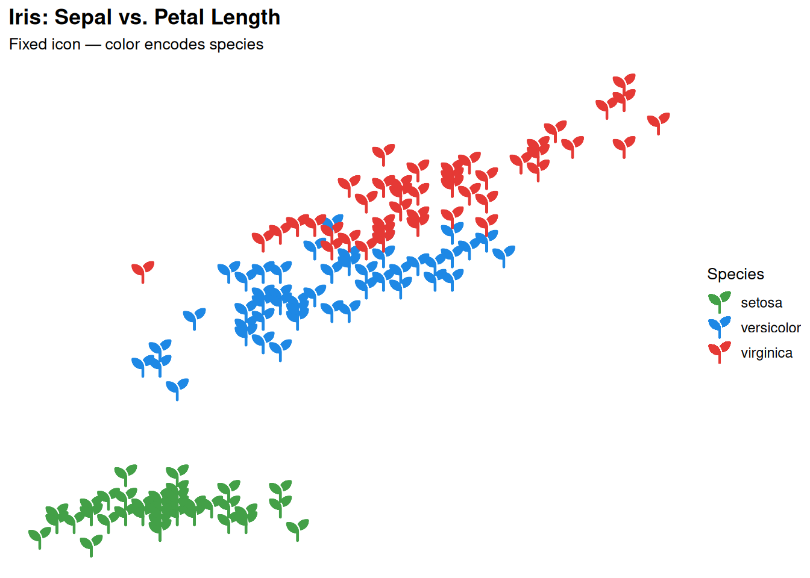
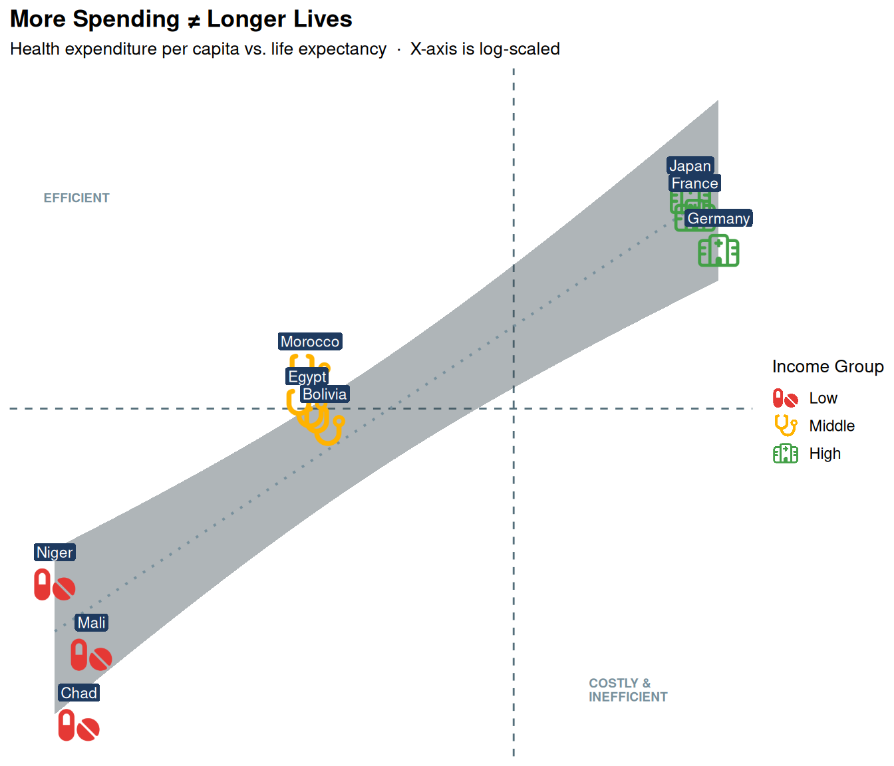

ggplot(iris, aes(x = Sepal.Length, y = Petal.Length, color = Species)) +
geom_icon_point(icon = "seedling", size = 1.5, dpi = 100) +
scale_color_manual(values = c(
"setosa" = "#43A047",
"versicolor" = "#1E88E5",
"virginica" = "#E53935"
)) +
theme(base_size = 15) +
labs(
title = "Iris: Sepal vs. Petal Length",
subtitle = "Fixed icon — color encodes species",
x = "Sepal Length (cm)",
y = "Petal Length (cm)",
color = "Species"
)What is geom_icon_point()?
geom_icon_point() works like ggplot2::geom_point() but replaces dots with Font Awesome icons. No preprocessing needed — supply any data frame with x and y variables.
1. Basic Usage — A Fixed Icon
The simplest use case: a single icon for all points, with color carrying the grouping information. Use the icon parameter (not aes()) to fix one icon across all observations.

2. Mapping Icons to Categories
Map icon inside aes() to give each category its own icon.
# Search the icons you want to use with fa_icons() and note their names:
fa_icons(query = "apple")
fa_icons(query = "drumstick")
fa_icons(query = "cheese")
# Create a data frame with an 'icon' column that matches your categories:
df_food <- data.frame(
food = c("Apple", "Carrot", "Orange", "Chicken", "Beef", "Salmon",
"Milk", "Cheese", "Yogurt"),
calories = c(52, 41, 47, 165, 250, 208, 61, 402, 59),
protein = c(0.3, 1.1, 0.9, 31, 26, 20, 3.2, 25, 10),
group = c(rep("Fruit & Veg", 3), rep("Meat & Fish", 3), rep("Dairy", 3)),
icon = c("apple-whole", "carrot", "lemon",
"drumstick-bite", "bacon", "fish",
"bottle-water", "cheese", "jar")
)
# Set factor levels to control legend order and icon assignment
df_food$group <- factor(df_food$group,
levels = c("Fruit & Veg", "Dairy", "Meat & Fish"))
ggplot(df_food, aes(x = calories, y = protein, icon = icon, color = group)) +
geom_icon_point(size = 2, dpi = 100) +
scale_color_manual(values = c(
"Fruit & Veg" = "#43A047",
"Dairy" = "#1E88E5",
"Meat & Fish" = "#E53935"
)) +
theme(base_size = 15) +
labs(
title = "Calories vs. Protein by Food",
subtitle = "Each icon represents a specific food; color reflects the group",
x = "Calories (per 100g)",
y = "Protein (g per 100g)",
color = "Group"
)
3. Size Mapping
Map a continuous variable to size. Use scales::rescale() to keep sizes readable.
# Search the icons you want to use with fa_icons() and note their names:
fa_icons(query = "apple")
fa_icons(query = "spotify")
df_brand <- data.frame(
brand = c("Apple", "Google", "Microsoft", "Meta", "Amazon",
"Netflix", "Spotify", "Uber", "Airbnb"),
revenue = c(394, 283, 212, 117, 514, 32, 13, 37, 9),
market_cap = c(2950, 1750, 2800, 1200, 1750, 190, 55, 140, 75),
employees = c(160, 180, 220, 86, 1540, 13, 9, 32, 6),
icon = c("apple", "google", "windows", "meta", "amazon",
"tv", "spotify", "uber", "airbnb")
)
# Rescale employees to a readable icon size range
df_brand$size_scaled <- scales::rescale(df_brand$employees, to = c(0.8, 2.5))
ggplot(df_brand, aes(x = revenue, y = market_cap,
icon = icon, color = brand, size = size_scaled)) +
geom_icon_point(dpi = 100) +
scale_x_log10(labels = scales::dollar_format(suffix = "B")) +
scale_y_log10(labels = scales::dollar_format(suffix = "B")) +
scale_color_manual(values = c(
"Apple" = "#FF5252", "Google" = "#42A5F5",
"Microsoft" = "#4DB6AC", "Meta" = "#8E24AA",
"Amazon" = "#FFB300", "Netflix" = "#E53935",
"Spotify" = "#1DB954", "Uber" = "#546E7A",
"Airbnb" = "#FF4081"
)) +
scale_size_continuous(range = c(1, 3), labels = scales::comma) +
theme_minimal(base_size = 15) +
theme(legend.position = "bottom") +
labs(
title = "Tech Giants: Revenue vs. Market Cap",
subtitle = "Icon = brand · Size = employees (rescaled) · Log scales",
x = "Annual Revenue (log scale)",
y = "Market Cap (log scale)",
color = "Brand",
size = "Employees"
)
4. Factor Ordering
When color is a factor, icons follow factor level order automatically.
# Search the icons you want to use with fa_icons() and note their names:
fa_icons(query = "mug")
fa_icons(query = "fire")
df_coffee <- data.frame(
bean = c("Colombian", "Ethiopian", "Brazilian",
"Kenyan", "Guatemalan", "Honduran",
"Sumatran", "Robusta", "Vietnamese"),
acidity = c(7.2, 8.5, 5.1, 8.8, 7.5, 7.1, 4.2, 3.8, 3.5),
body = c(6.5, 5.8, 8.2, 5.5, 6.8, 6.5, 9.1, 9.5, 9.2),
roast = c(rep("Light", 3), rep("Medium", 3), rep("Dark", 3)),
icon = c(rep("mug-hot", 3), rep("coffee", 3), rep("fire-flame-curved", 3))
)
# Factor level order controls both legend order AND icon assignment
df_coffee$roast <- factor(df_coffee$roast, levels = c("Light", "Medium", "Dark"))
ggplot(df_coffee, aes(x = acidity, y = body, icon = icon, color = roast)) +
geom_icon_point(size = 2, dpi = 100) +
scale_color_manual(values = c(
"Light" = "#D4A843",
"Medium" = "#D4A574",
"Dark" = "#A67C52"
)) +
theme_minimal(base_size = 15) +
scale_legend_icon(size = 6) +
labs(
title = "Coffee Beans: Acidity vs. Body by Roast Level",
subtitle = "Factor levels follow roast intensity: Light \u2192 Medium \u2192 Dark",
x = "Acidity (1\u201310 scale)",
y = "Body / Mouthfeel (1\u201310 scale)",
color = "Roast"
)
Tip: Always set factor levels explicitly with
factor(..., levels = ...)before plotting. This guarantees that the icon in the legend matches the correct group, regardless of data row order.
5. Combining with Other Geoms
geom_icon_point() works with all standard ggplot2 geoms:
df_health <- data.frame(
country = c("Chad", "Mali", "Niger", "Bolivia", "Egypt", "Morocco",
"Germany", "France", "Japan"),
spend = c(27, 30, 22, 215, 185, 190, 5986, 4902, 4717),
life_exp = c(54, 58, 62, 71, 72, 74, 81, 83, 84),
income = c(rep("Low", 3), rep("Middle", 3), rep("High", 3)),
icon = c(rep("pills", 3), rep("stethoscope", 3), rep("hospital", 3))
)
ggplot(df_health, aes(x = spend, y = life_exp,
icon = icon, color = income)) +
# Reference lines: world averages
geom_vline(xintercept = 1060, linetype = "dashed",
color = "#546E7A", linewidth = 0.5) +
geom_hline(yintercept = 72.0, linetype = "dashed",
color = "#546E7A", linewidth = 0.5) +
# Trend line across all groups
geom_smooth(aes(group = 1), method = "lm", se = TRUE,
color = "#78909C", fill = "#37474F",
linewidth = 0.7, linetype = "dotted", alpha = 0.4) +
# Icons
geom_icon_point(size = 2, dpi = 100) +
# Country labels
geom_label(aes(label = country), color = "white",
fill = "#1E3A5F", label.size = 0,
label.padding = unit(0.15, "lines"),
vjust = -1.3, size = 3) +
# Quadrant annotations
annotate("text", x = 20, y = 84, label = "EFFICIENT",
color = "#78909C", size = 2.5, hjust = 0, fontface = "bold") +
annotate("text", x = 2000, y = 56, label = "COSTLY &\nINEFFICIENT",
color = "#78909C", size = 2.5, hjust = 0,
fontface = "bold", lineheight = 0.9) +
scale_x_log10(labels = scales::dollar_format()) +
scale_color_manual(values = c(
"Low" = "#E53935",
"Middle" = "#FFB300",
"High" = "#43A047"
)) +
theme_minimal(base_size = 15) +
theme(legend.position = "bottom") +
scale_legend_icon(size = 6) +
labs(
title = "More Spending \u2260 Longer Lives",
subtitle = "Health expenditure per capita vs. life expectancy \u00b7 X-axis is log-scaled",
x = "Health Spending per Capita (log scale)",
y = "Life Expectancy (years)",
color = "Income Group"
)
Summary
| Feature | How |
|---|---|
| Fixed icon | geom_icon_point(icon = "circle") |
| Mapped icons | aes(icon = icon_column) |
| Size mapping |
aes(size = var) + scales::rescale()
|
| Factor ordering |
factor(..., levels = ...) before plotting |
| Combine geoms | Add any ggplot2 geom before or after |